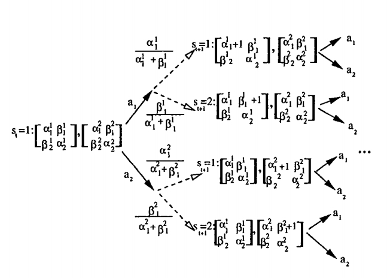

Michael Duff
Assistant Professor in ResidenceDepartment of Genetics and Genome Sciences
UConn Health Center
Institute for Systems Genomics
University of Connecticut
400 Farmington Ave
Farmington CT 06030
moduff@gmail.com
***As of December 2018, I am with the Fred Hutchinson Cancer Research Center***
in sunny Seattle WA, conducting research on B-cell receptor repertoire dynamics
in response to infection and vaccination.
Research directions: Machine Learning, Bioinformatics/Computational Biology/Computational Genomics, Reinforcement Learning Theory, Bayesian methods, Applied Statistics/Mathematics, AI, Deep-Learning, Optimization and Operations Research.
My efforts in the Graveley Lab have been directed toward bringing computational approaches, statistical modeling methods, and bioinformatics tools to bear upon problems posed by the analysis of Next-Generation-Sequencing (NGS) data, including the standard repertoire of techniques drawn from computational genomics: genome assembly, sequence alignment, gene-expression analysis, motif finding, SNP and structural-variant detection, phylogenetic analysis, and identification of regulatory sequences and networks---as well as the development of special-purpose ad-hoc computational tools for particular applications and novel techniques for data visualization.
- NGS data analysis
- DNA/RNA/ChIP/CLIP/iCLIP/RIP-seq data analysis(ENCODE)
- alternative splicing and recursive splicing in D.melanogaster (modENCODE, DSCAM)
- RNA interactions and functional intronic domains
- lincRNA data analysis in hES differentiation
- Human genetic variation, GWAS, and psychogenetics
- analysis of RNAi off-target effects
- transplicing
- Polyomavirus editing, transcript expression profiling for the virus and its host
- alternative-splicing changes during Human embryonic stem cell differentiation
- Archaeal CRISPR-Cas systems
- DNA/RNA/ChIP/CLIP/iCLIP/RIP-seq data analysis(ENCODE)
- machine learning methods
- Bayesian methods, model-structure induction, and deep learning, transformers, LLMs, & generative diffusion for (structural) biology
- reinforcement learning theory
- experimental design
- sequential decision-making under uncertainty, bandit problems
- Bayesian methods, model-structure induction, and deep learning, transformers, LLMs, & generative diffusion for (structural) biology
- two new courses:
- MEDS 5325: Bioinformatics Practicum
- MEDS 6498: Machine Learning for Genomics
- MEDS 5325: Bioinformatics Practicum
How can Next-Generation-Sequencing be used to infer causal relationships between transcribed elements? How
can ambiguity and bias be modeled and resolved?

Papers
Willis, J.R. et al (2025). Vaccination with mRNA-encoded nanoparticles drives early maturation of HIV bnAb precursors in humans, Science 0,eadr8382DOI:10.1126/science.adr8382Tom G. Caniels et al. ,Precise targeting of HIV broadly neutralizing antibody precursors in humans.Science 0,eadv5572DOI:10.1126/science.adv5572
Hahn, W.O. et al (2024). HIV BG505 SOSIP.664 trimer with 3M-052-AF/alum induces human autologous tier-2 neutralizing antibodies. medRxiv 2024.05.08.24306957
Cohen, K.W., et al (2021) Shared HIV envelope-specific B cell clonotypes induced by a pox-protein vaccine regimen. medRxiv doi: https://doi.org/10.1101/2021.08.23.21262508
Mou, Y.,et al (2020) Impaired lipid metabolism in astrocytes underlies degeneration of cortical projection neurons in hereditary spastic paraplegia, Acta Neuropathologica Communications https://doi.org/10.1186/s40478-020-01088-0
Van Nostrand, E.L., et al (2020) A Large-Scale Binding and Functional Map of Human RNA Binding Proteins, Nature 583, pp. 711–719, July 29.
Chang, H.H., Eibi, G., et al (2017) Incidence of Pancreatic Cancer is Dramatically Increased by a High Fat, High Calorie Diet in KrasG12D Mice. PLoS ONE 12(9).
Pilling, L.C., et al (2017) Red Blood Cell Distribution Width: genetic evidence for aging pathways in 116,666 volunteers. PLoS ONE 12(9).
Garren, S., Duff, M.O., & Carmichael, G. (2015) Global analysis of mouse polyomavirus infection reveals dynamic regulation of viral and host gene expression and promiscuous viral RNA editing. PLOS Pathogens, 11(9), September 25.
Stoiber, M.H. et al (2015). Extensive cross-regulation of posttranscriptional regulatory networks in Drosophila, published onlinein Genome Research, Aug 20.
Brooks, A.N., Duff, M.O., May, G., Yang, L., Landolin, J., Wan, K., Sandler, J., Celniker, S.E., Graveley, B.R. and Brenner, S.E. (2015) Regulation of alternative splicing in Drosophila by 56 RNA binding proteins, published online in Genome Research, Aug 20.
Duff, M.O., Olson, S, Wei, X., Osman, A., Plocik, A., Bolisetty, M. Celniker, S. & Graveley, B.R. (2015) Genome-wide Identification of Zero Nucleotide Recursive Splicing in Drosophila. Nature 521, May 21, 376-9.
Gerstein, M.B., et al (2014) Comparative analysis of the transcriptome across distant species. Nature 512, 445-448.
Chen, Z.X. et al (2014) Comparative validation of the D. melanogaster modENCODE Transcriptome Annotation. Genome Res. July;24(7):1209-23.
Brown, J.B. et al (many authors). 2014. Diversity and dynamics of the Drosophila transcriptome. Nature, published online March 16, 2014.
Eipper-Mains JE et al (2013) Effects of cocaine and withdrawal on the mouse nucleus accumbens transcriptome. Genes Brain Behav.12:21-33
Smibert P, Miura P, Westholm JO, Shenker S, May G, Duff MO, Zhang D, Eads BD, Carlson J, Brown JB, Eisman R C, Andrews J, Kaufman T, Cherbas P, Celniker SE, Graveley BR, Lai EC. (2012) Global patterns of tissue-specific alternative polyadenylation in Drosophila. Cell Reports, Feb 23.
Yang L., Duff MO, Graveley BR, Carmichael GG and Chen L-L. 2011. Genomewide characterization of long nonpolyadenylated RNAs. Genome Biology, Feb 16.
Roy, S. et al (many authors). 2010. Identification of functional elements and regulatory circuits in Drosophila by large-scale data integration. Science, Dec 24.
Graveley,B.R, Brooks,A.N., Carlson,J.W., Duff,M.O., Landolin,J.M., Yang,L., et al (2010). The developmental transcriptome of Drosophila melanogaster. Nature, Dec 22.
Cherbas, L., et al (many authors). 2010. The transcriptional diversity of 25 Drosophila cell lines. Genome Research, Dec 22.
Brooks, A.N., Yang. L., Duff, M.O., Hansen, K.D., Dudoit, S., Brenner, S.E., Graveley, B.R. 2010. Conservation of an RNA Regulatory Map between Drosophila and Mammals. Genome Research, Oct 4.
McManus, C.J., Duff, M.O., Eipper-Mains, J., Graveley, B.R. 2010. Global Analysis of Transplicing in Drosophila. Proc Natl Acad Sci, July 1.
McManus, C.J., Coolon, J.D., Duff, M.O., Eipper-Mains, J., Graveley, B.R. and Wittkopp, P.J. 2010. Regulatory Divergence in Drosophila Revealed by mRNA-Seq . Genome Research, 20(6):816-25.
Hale, C.R., Zhao, P., Olsen, S., Duff, M.O., Graveley, B.R., Wells, L., Terns, R.M., and Terns, M.P. 2009 . RNA-guided RNA cleavage by a CRISPR RNA-Cas protein complex. Cell, 139(5):945-56. Nov 25.




Mostly Reinforcement Learning Theory
- Y Niv, MO Duff & P Dayan (2005) - Dopamine, Uncertainty and TD Learning - Behavioral and Brain Functions 1:6 (4 May 2005), doi:10.1186/1744-9081-1-6.
- Duff, Chudova, Wold, Smyth, & Mjolsness. Statistical inference of biologically-plausible dynamic regulatory networks with core-leaf topology, ICSB, 2005.
- Duff, M.O. Design for an optimal probe. Proceedings of the 20th International Conference on Machine Learning, 2003: 131-138.
- Duff, M.O. Diffusion approximation for Bayesian Markov chains. Proceedings of the 20th International Conference on Machine Learning, 2003: 139-146.
- Duff, M.O.
Optimal Learning: Computational procedures for Bayes-adaptive Markov decision processes. Ph.D. Thesis, Dept. of Computer Science, Univ. of Massachusetts, Amherst, 2002.
- Duff, M.O.
Monte-Carlo Algorithms for the Improvement of Finite-State Stochastic Controllers.
Eighth International Workshop on Artificial Intelligence and Statistics, Key West FL.
- Duff, M.O.
A Control Variable Perspective for the Optimal Combination of Truncated Corrected Returns
Research Note. Department of Computer Science, University of Massachusetts, Amherst.
- Duff, M.O. & Barto, A. Local bandit approximation for optimal learning problems. Advances in Neural Information Processing Systems 9. 1997: 1019-1025.
- Duff, M.O. Q-learning for bandit problems. Proceedings of the 12th International Conference on Machine Learning, 1995: 209-217.
- Bradke, S. & Duff, M.O. Reinforcement learning methods for continuous-time Markov decision processes. Advances in Neural Information Processing Systems 7. 1995: 393-400.
- Duff, M.O. Solving Bellman's equation by the method of continuation. Proceedings of the American Control Conference, 1994.: 2671-2682.
- Barto A. & Duff, M.O. Monte-Carlo matrix inversion and reinforcement learning. Advances in Neural Information Processing Systems, vol 6 1994: 687-694.
- Duff, M.O. Backpropagation and Bach's 5th cello suite (Sarabande). Proceedings of the International Joint Conference on Neural Networks.
- Szilagyi, M.O., Duff, M., & Yakowitz, S. Procedure for electron and ion lens optimization. Applied Physics Letters.